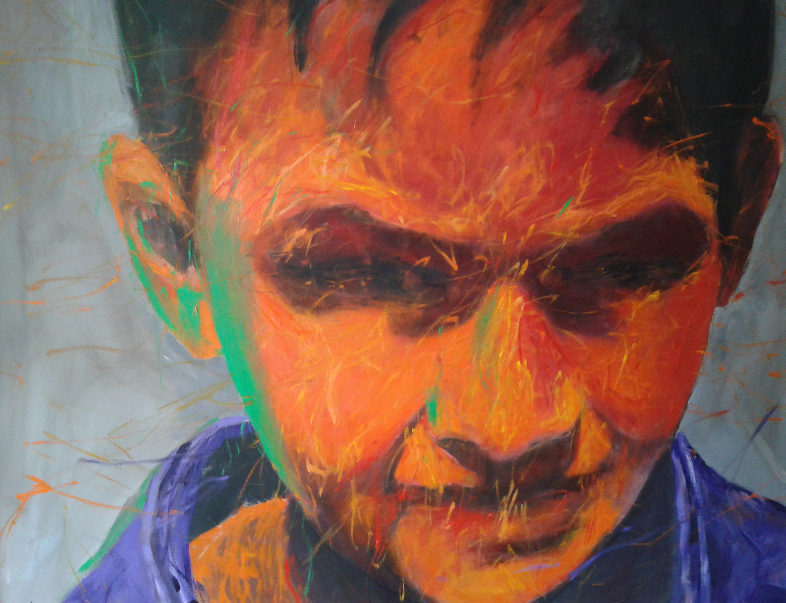

A B O U T M E
Eric W Brockwell
I’m a Geographer living in Peoria, IL. I enjoy traveling, rowing, and drawing. I’m also interested in innovation
and systemic process improvement. Most of all, I love spending time with my three cats and new granddaughter.

In addition to the US, I've lived and worked in ...
- Kazakhstan
- Iraq
- Jordan
- Qatar
- Thailand
... solving real world problems, including: how to get oil out of the North Caspian Sea
and the Gulf of Thailand with the least negative impact to environment/community/safety; how to clean
up the Gulf of Mexico during/after an oil spill; how to increase the amount of water available to rebuild
the agriculture sector in Iraq; and how to build/maintain better maps using machine learning [ML] to navigate
autonomous vehicles.
What would you do if you couldn't fail?